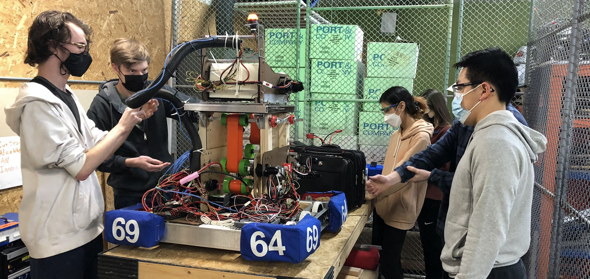

Team 6964 originates from the Upper Arlington High School Robotics Club, founded in 2015 by Physics Teacher Curt Bixel and several students captivated by STEM and robotics.
The Robotics Club started with local combat robotics competitions and a workspace for students to study and learn about robotics.
In 2018, members of the club registered as FIRST Robotics team 6964, "BearBots." Team 6964 won the Rookie All Star Award at the 2018 Buckeye Regional event, an award presented to an outstanding rookie team each year.
In addition to achievement at competition, team 6964 has expanded its outreach and community service efforts. Team 6964 collaborates with the Upper Arlington High School Computer Science club to host Girl Scout Robotics,
an opportunity for girl scout troops around central Ohio to experience Robotics and STEM, and for our students to show mastery of their skills. During the off-season, members of the club volunteer in community service projects
such as public park cleanups and assisting younger students to fundraise for FIRST Robotics.